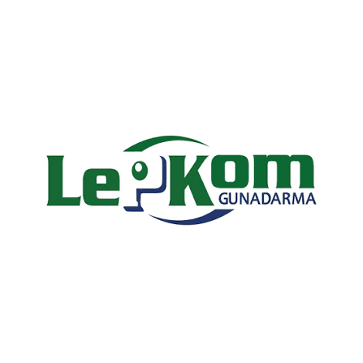
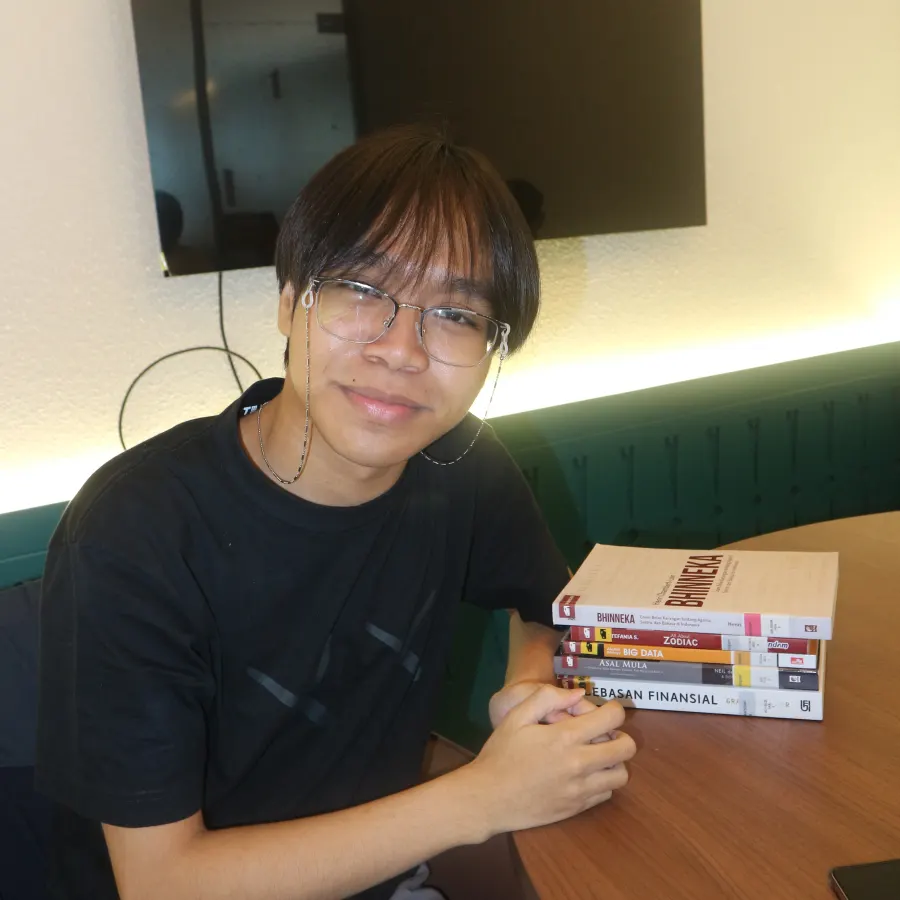
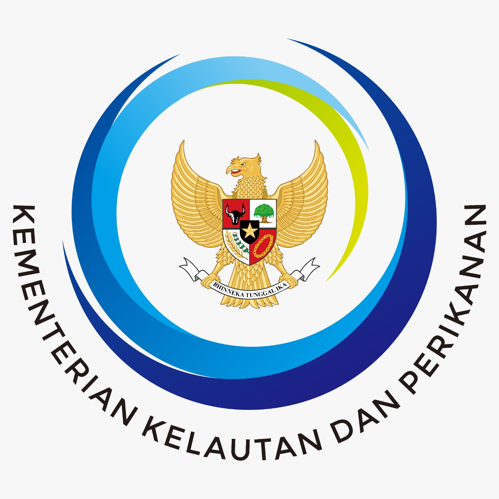
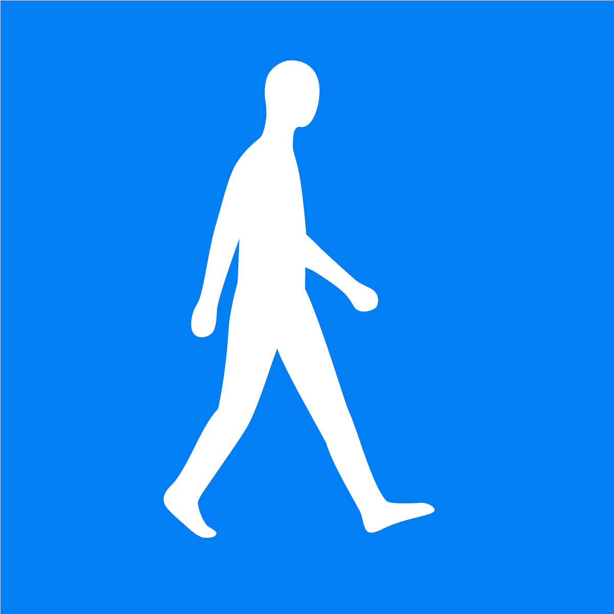
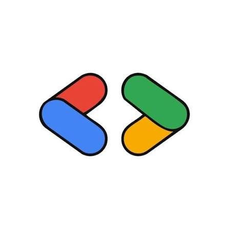
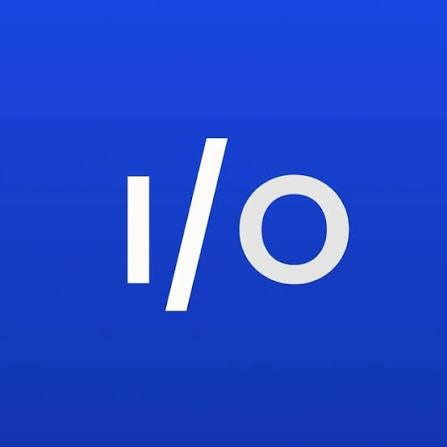

Informatics
Universitas Gunadarma · GPA 3.91
Data Analyst / Data Scientist
Universitas Gunadarma · GPA 3.91

LepKom · Mentoring 100+ students
Aspiring Data Analyst and Data Scientist with experience in data analytics, AI and data competitions including GEMASTIK and Satria Data, model development, and mentoring more than 100 students.

| Programming Language Skills |
|
|---|---|
| Data Analyst Technical Skills |
|
| ML/AI Libraries |
|
| Tools & Platform |
|
Building practical experience in technology, research, and the communities around them.
Contract · Depok, West Java, Indonesia

Kementerian Kelautan dan Perikanan Republik Indonesia
Universitas Gunadarma

Delegate

Member

Member
Applied research, engineering projects, and product work.
Showing 3 projects